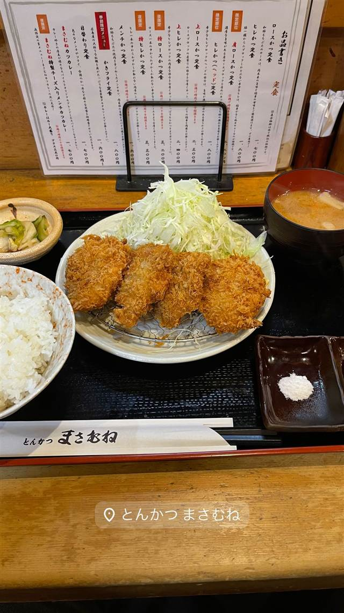

豚々ジャッキー
あぐー豚とやんばる島豚だけを使うとんかつ、引き戸の奥の隠れ家
豚々ジャッキー
2015年開業、那覇・久米のとんかつ店。県産のあぐー豚とやんばる島豚だけを使い、住宅の玄関のような引き戸を開けて入る隠れ家的な店構えが特徴。
TRIVIA
豆知識
- 店名は店主の苗字「謝敷」のあだ名「ジャッキー」に由来する
- 県産豚肉100%を使用している
REVIEWS
世間の評判
3.52食べログ
あぐー豚の脂の甘みとサクサクの衣
- あぐー豚を使った衣のサクサク感と脂身の甘みを評価する声が多い
- キャベツやご飯がたっぷりでおかわりできる満足度の高さを挙げる声がある
- 最近になってご飯やキャベツが有料化されたことへの不満の声がある
- 揚げ方によっては衣が剥がれやすく油が多く感じるという指摘もある
食べログ 口コミ483件
| 創業 | 2015年オープン |
|---|---|
| 看板 | あぐー豚・やんばる島豚を使ったとんかつ |
| こだわり | 沖縄県産ブランド豚（あぐー豚・やんばる島豚）のみを使用する |
| 掲載・評価 | 沖縄屈指のとんかつの名店として複数のグルメメディアで紹介されている |
| どこから | 遠方 |
| 予算 | 昼 ¥1,000～¥1,999 夜 ¥3,000～¥3,999 |
| 定休日 | 月・火 |
| 予約 | 予約不可 |
| 場所 | 旭橋駅 沖縄県那覇市久米 |
| メモ | 2階の店舗で、普通の住宅の玄関のような引き戸が入口 |
食べたもの：とんかつ定食
NEARBY
近い店・同じ系統の店
-
 ハワイ 牧志駅
ハワイアンフルーツカフェ -the Sea-
久米島の海洋深層水を極薄の氷に削り海を食べるかき氷に仕立てる
昼 ¥1,000～¥1,999 夜 ¥1,000～¥1,999
ハワイ 牧志駅
ハワイアンフルーツカフェ -the Sea-
久米島の海洋深層水を極薄の氷に削り海を食べるかき氷に仕立てる
昼 ¥1,000～¥1,999 夜 ¥1,000～¥1,999
-
 ブランチ 牧志駅
C&C BREAKFAST OKINAWA
牧志公設市場の食材を使うエッグベネディクトと沖縄ハワイ北欧融合の空間
昼 ¥1,000～¥1,999
ブランチ 牧志駅
C&C BREAKFAST OKINAWA
牧志公設市場の食材を使うエッグベネディクトと沖縄ハワイ北欧融合の空間
昼 ¥1,000～¥1,999
-
 アイス・ジェラート 美栄橋駅
ブルーシール 国際通り店
米軍統治下の乳製品会社発祥、紅芋やサトウキビ味のアイス
昼 ～¥999 夜 ～¥999
アイス・ジェラート 美栄橋駅
ブルーシール 国際通り店
米軍統治下の乳製品会社発祥、紅芋やサトウキビ味のアイス
昼 ～¥999 夜 ～¥999
-
 沖縄そば 首里駅
てぃしらじそば
趣味が高じて脱サラ店主が始めた、売り切れ御免の自家製麺沖縄そば
昼 ¥1,000～¥1,999 夜 ¥1,000～¥1,999
沖縄そば 首里駅
てぃしらじそば
趣味が高じて脱サラ店主が始めた、売り切れ御免の自家製麺沖縄そば
昼 ¥1,000～¥1,999 夜 ¥1,000～¥1,999
-
 とんかつ 両国
とんかつ はせ川 両国店
大門の名店『むさしや』仕込み、三元豚のとんかつがビブグルマン4年連続
昼 ¥1,000～¥1,999 夜 ¥2,000～¥2,999
とんかつ 両国
とんかつ はせ川 両国店
大門の名店『むさしや』仕込み、三元豚のとんかつがビブグルマン4年連続
昼 ¥1,000～¥1,999 夜 ¥2,000～¥2,999
-

とんかつ 溜池山王 とんかつ まさむね 岩塩30種類以上から厳選、ミシュランビブグルマン4年連続の上ロースかつ 昼 ¥1,000～¥1,999 夜 ¥2,000～¥2,999